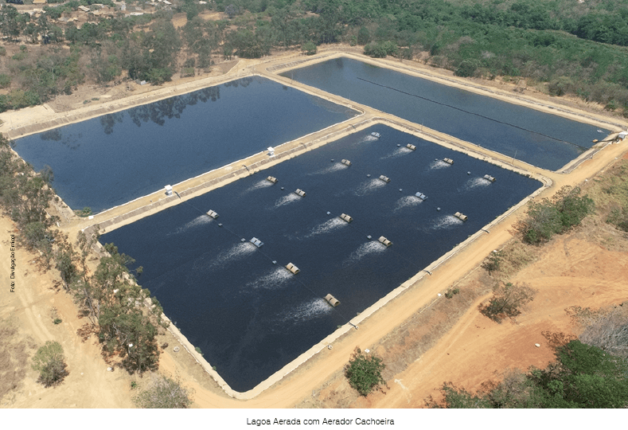
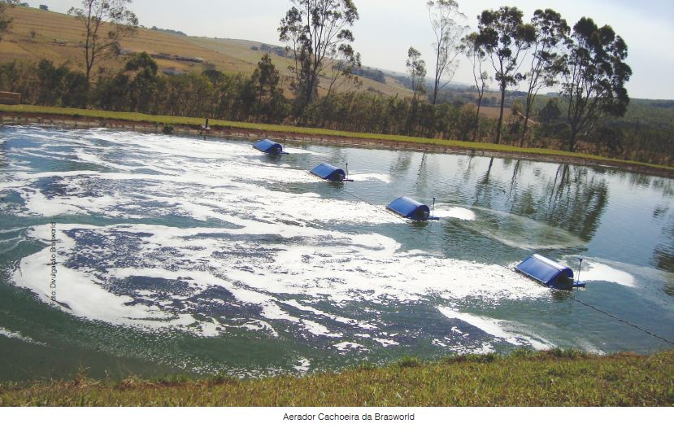
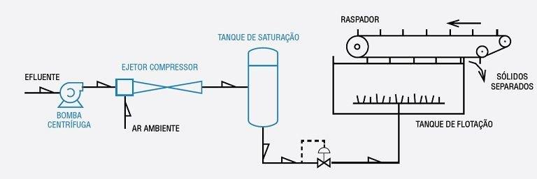
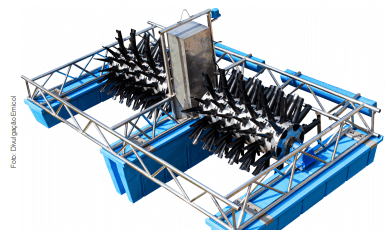

Aeradores são equipamentos que, dependendo do local onde são empregados, podem assumir uma ou várias funções. Quando utilizados em tratamento de efluentes líquidos, possuem duas ações principais: fornecer oxigênio para o meio líquido e/ou promover a movimentação do meio líquido fazendo com que os sólidos presentes se mantenham em suspensão, este processo é chamado de aeração.
A aeração é uma etapa do tratamento de água cujo objetivo é torná-la adequada para consumo humano ou para uso em processos industriais. Também pode ser utilizada no tratamento de efluentes, seja para reuso ou para o descarte correto.Entre outras coisas, a aeração ajuda na oxidação e na precipitação do ferro e do manganês, compostos indesejáveis por vezes encontrados na água.
Os tipos de aeração dividem-se em dois tipos: aeradores mecânicos (alta e baixa rotação, flutuantes e fixos) e os difusores de aeração. A aeração mecânica opera na superfície do tanque ou lagoa, enquanto a aeração difusa de ar comprimido opera no fundo do tanque de flotação.
Os tipos de aeradores mais comuns são: Injetores tipo Venturi, Aerador de Superfície, Aerador de Pás, Aerador com Difusões e um dos mais recentes o Aerador Cachoeira
